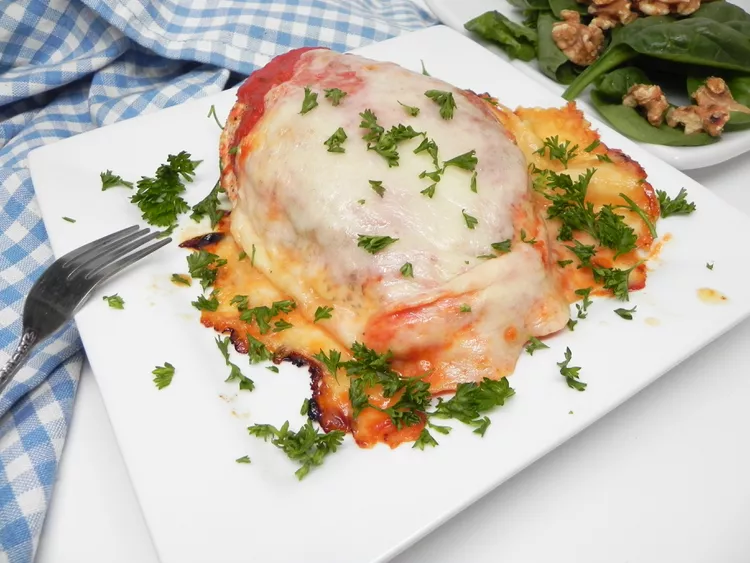

Home
Chicken Parmesan

Description
Chicken Parmesan is a classic Italian-American dish featuring crispy, breaded chicken topped with marinara sauce
and melted mozzarella. The chicken is pan-fried to golden perfection, layered with sauce and cheese, and baked
until bubbly.
Perfect for a cozy dinner, it pairs beautifully with pasta, salad, or garlic bread.
This easy recipe delivers rich, comforting flavors with simple ingredients and straightforward steps.
Ingredients
- Cooking spray
- 1 (16 ounce) package skinless, boneless chicken breasts (such as Perdue®)
- 4 slices mozzarella cheese
- 2 cups tomato sauce, or to taste
Steps
- Preheat the oven to 375 degrees F (190 degrees C). Spray a baking pan with cooking spray. Place chicken on
the prepared pan.
- Bake in the preheated oven for 20 minutes, flipping chicken after 12 minutes. Remove from the oven, add
desired amount of sauce, and top each breast with mozzarella cheese.
- Bake until cheese is melted and chicken is no longer pink in the center and the juices run clear, about 12
more minutes. An instant-read thermometer inserted into the center should read at least 165 degrees F (74
degrees C).